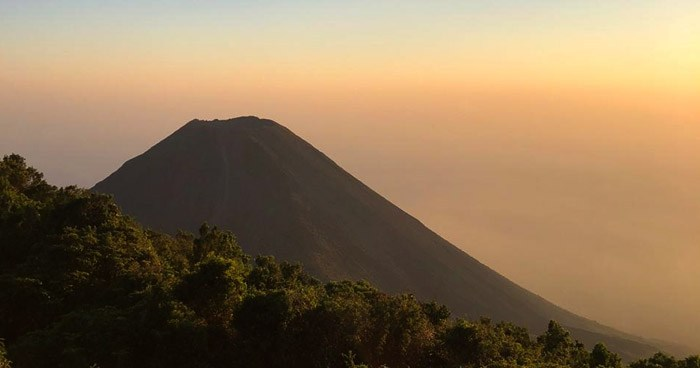

Actividad del Volcán de Izalco se mantiene normal, informa Ministerio de Medio Ambiente
Ante rumores que circulan en redes sociales sobre actividad anormal en el Volcán de Izalco, como olores irregulares que emanan del mismo, el Ministerio de Medio Ambiente aclara que todo se encuentra en completa normalidad.
Aclaran que el volcán presentó una pequeña actividad de humo que se mantuvo en la parte alta, formada por vapor de agua que mantienen temperaturas de 75°C.
Su actividad se mantiene en monitoreo por medio de las cámaras instaladas en el Cerro Verde, donde se muestra un volcán bastante tranquilo con un paso de nubosidad denso que los habitantes del lugar pudieron haber confundido con cualquier otra actividad anormal.
También aseguran que el monitoreo sísmico no revela actividad anormal en la zona del volcán de Izalco y en el volcán de Santa Ana.
Eduardo Gutierrez, coordinador de Vulcanología, pidió a la población mantenerse informados por medio del Sistema de Protección Civil y del Ministerio de Medio Ambiente, y no hacer caso a rumores que pueden generar alarma.